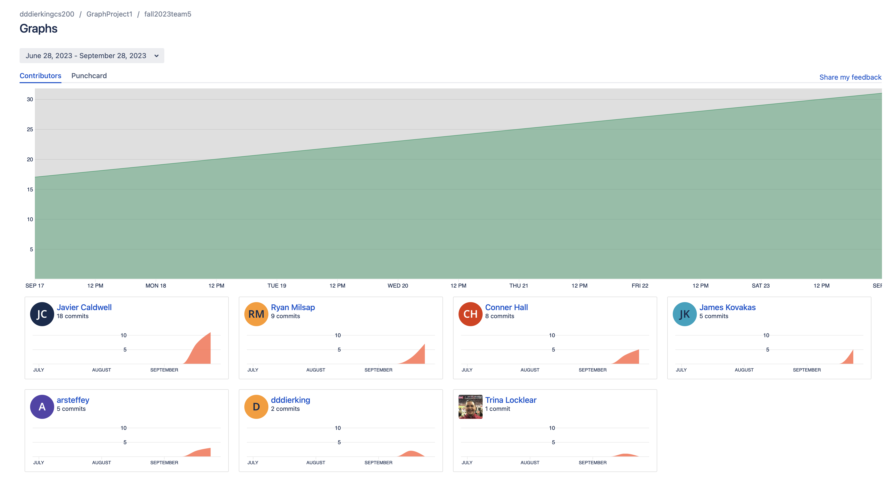
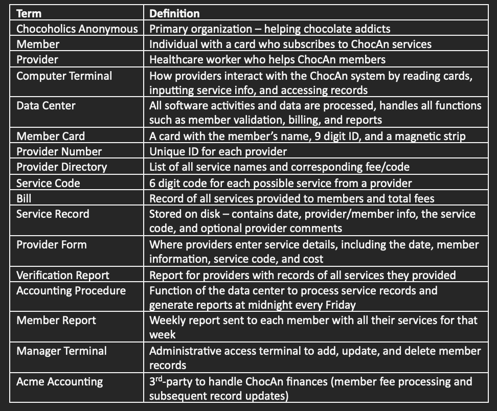
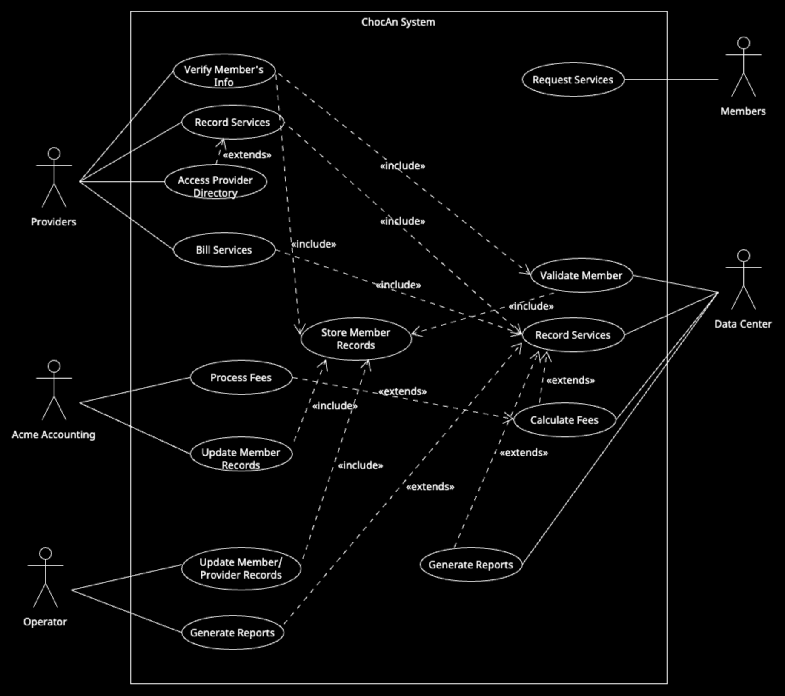
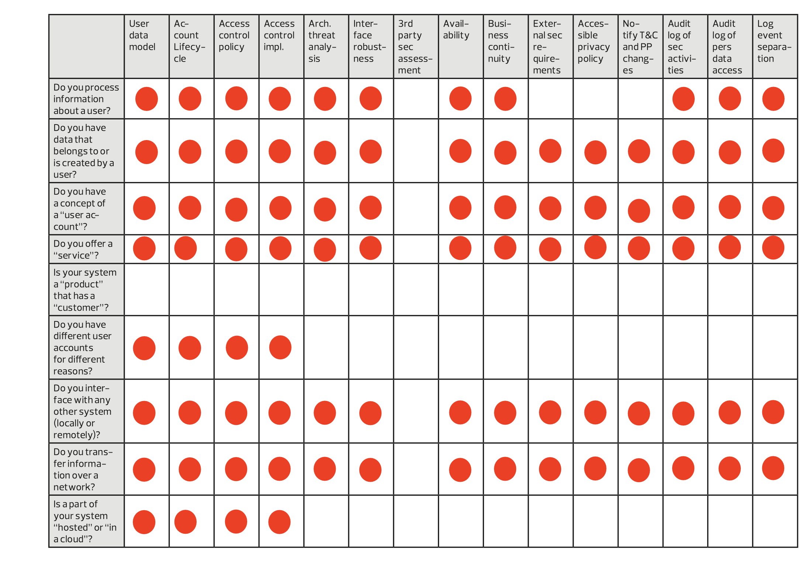
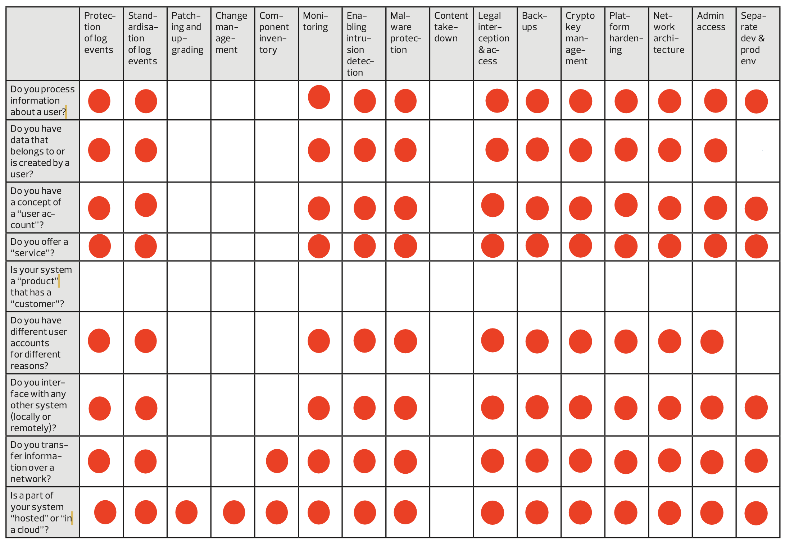
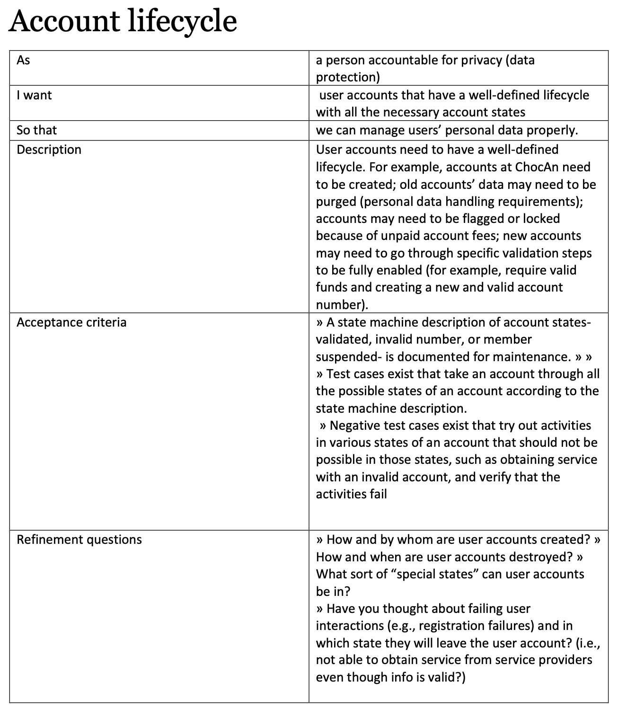
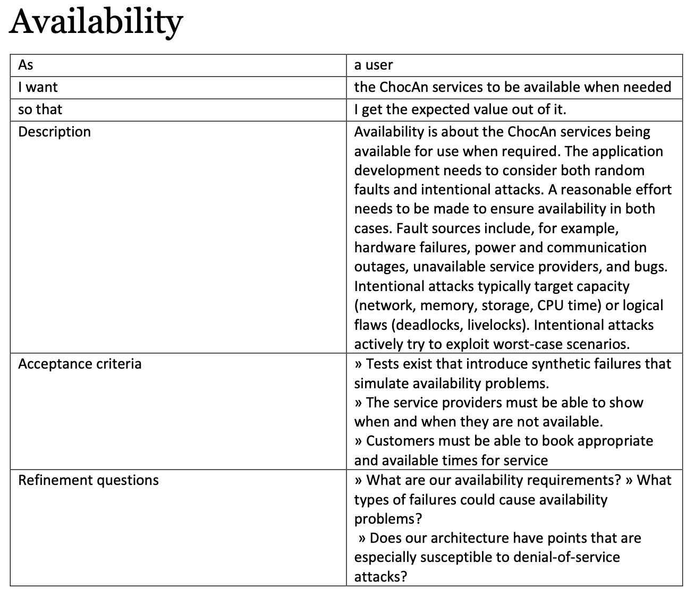

| Name | CWID | Crimson Email | Hours |
|---|---|---|---|
| Javier Caldwell | 12278113 | JTCaldwell2@Crimson.ua.edu | 5 |
| Ben Kovakas | 12274984 | jbkovakas@crimson.ua.edu | 5 |
| Ryan Milsap | 12227882 | rmmilsap@crimson.ua.edu | 5 |
| Conner Hall | 12215700 | cchall5@crimson.ua.edu | 5 |
| Alexander Steffey | 12251132 | arsteffey@crimson.ua.edu | 5 |
| Dj Dierking | 12063001 | dddierking@crimson.ua.edu | 5 |
| Name | Tasks | Percentage |
|---|---|---|
| Javier Caldwell | Use Case Descriptions/Paragraph | 16.7% |
| Conner Hall | Use Case Descriptions | 16.7% |
| DJ Dierking | Compiled UML Diagrams/Glossaries, Submitter | 16.7% |
| Ben Kovakas | General Security User Stories | 16.7% |
| Ryan Milsap | Story Selection matrix | 16.7% |
| Zander Steffey | Use Case Description | 16.7% |

The name of the project was Chocoholics Anonymous. The customer of this project was the Chocoholics Anonymous (ChocAn) organization. The names of the team members assigned to this project were Javier Caldwell, Conner Hall, DJ Dierking, Ben Kovakas, Ryan Milsap, and Zander Steffey. The time of the project was ten days. There was no programming language used for this project, and the information for this project was submitted using HTML files. The submitter for this project was DJ Dierking. The inital UML diagrams are in the files: 'DierkingUML.png' for DJ Dierking, 'Javier-UML.png' for Javier Caldwell, 'PersonalUseCaseRMM (1).png' for Ryan Milsap, 'ZandersUCD.png' for Zander Steffey, 'ben_kovakas-UML.png' for Ben Kovakas, and 'connorUML.png' for Conner Hall. The HTML files for each member are 'JavierCaldwellTeam5Report1.html' for Javier Caldwell, 'RyanMilsapTeam5Report' for Ryan Milsap, 'AlexanderSteffeyTeam5Report.html' for Zander Steffey, 'BenKovakasTeamReport5.html' for Ben Kovakas, and 'ConnerHallTeam5Report.html' for Conner Hall. DJ Dierking's HTML file is the overall Team 5 project report file. The security matrix file is 'SecurityMatrix.pdf'. The user stories file is “User Stories for Security.pdf'. For this webpage, screenshots have been saved as “glossary.png”, “matrix1.png”, “matrix2.png”, “story1.png”, and “story2.png”.


Use Case: Store Member Records
Context: Member records and service histories must be
securely store and managed by the ChocAn system
Actors: ChocAn Data Center
Main Success Scenario:
1. The ChocAn Data Center receives member records from
various sources
2. The ChocAn Data Center runs member records against the
data base for a match
3. The system matches data provided to the given member
4. The system updates the members info with the given data
5. The system saves the updates to the Data Center's records
6. The Data Center maintains records for both current and
past members, allowing for historical reference and auditing
7. The system closes the member records until requested
Exceptions:
3a. The member records info has no positive match
3a.1 The system
creates new member entry
3a.2 The system
writes data to new member entry
3a.3 Use case
continues from step 5
-----------
Use Case: Record Services
Context: The ChocAn Data Center wants to update the record
of services provided to a member and their corresponding service fees
Actors: ChocAn Data Center
Main Success Scenario:
1. The ChocAn Data Center receives a request to
record services of a provider's member
2. The ChocAn Data Center's retrieves the request's member
number, service code, date provided, and any additional comments data
3. The system determines the service code equivalent
4. The ChocAn Data Center confirms the service's proper
match
5. The system records the service's data log to a disk
6. The system closes the service record
Exceptions:
4a. An invalid code has no service match
4a.1 The system
displays an error message containing the code and noting that it is invalid
4a.2 Use case
continues from step 1
-----------
Use Case: Validate Member
Context: The ChocAn Data Center wants to validate a member's
information, possibly at the request of provider's request to verify said
member's information
Actors: ChocAn Data Center
Main Success Scenario:
1. The ChocAn Data Center receives the member number from
the card reading system
2. The ChocAn Data Center requests for the number to be
verified by the system
3. The system consults the member records to find a match to
the member number
4. The system uses the match to verify the member number as
valid
5. The system sends a valid message back to the ChocAn Data
Center
Exceptions:
3a. The number does not match that of a valid member
3a.1 The system
returns an invalid verification
3a.2 The system
requests for the number to be reread
3a.3 Use case
continues from step 1
-----------
Use Case: Calculate Fees
Context: The ChocAn Data Center must calculate service fees
based on the recorded healthcare services provided to members
Actors: ChocAn Data Center
Main Success Scenario:
1. The Data Center retrieves the recorded service data for a
specific provider.
2. Using the service codes and associated fee structures,
the Data Center calculates the fees for each service.
3. The Data Center totals the fees for all services provided
by the provider during a specified time frame.
4. The Data Center logs the fees with the provider's service
records.
Exceptions: N/A
-----------
Use Case: Generate Report
Context: The ChocAn Data Center must sort and generate
reports to summarize member and provider activities, services, and fees
Actors: ChocAn Data Center
Main Success Scenario:
1. The Data Center receives a request for a specific
report (e.g., member service summaries, provider service summaries)
2. The Data Center accesses the service record for the
specified report
2. The Data Center sorts and generates the requested reports
based on the available data
3. The Data Center sends the generated reports to the party
that requested it via email attachment
Exceptions:
2a. The report does not match an entry in the service record
2a.1 The system
returns an invalid request message and prompts for reentry
2a.2 Use case
continues from step 1
-----------
Use Case: Update Member Records
Context: Acme updates the financial records of
members within the ChocAn system
Actors: ACME Accounting Services, ChocAn Data Center
Main Success Scenario:
1. ACME Accounting Services contacts ChocAn Data Center at
9:00 PM
2. ChocAn Data Center receives updated membership records
from ACME Accounting Services
3. ChocAn saves the updated membership records
Extensions:
N/A
-----------
Use Case: Update ChocAn Records
Context: A Operator wishes to
update records
Actors: Operator, ChocAn Data Center
Main Success Scenario:
1. The Operator views their terminal
2. The terminal prompts the Operator for their credentials
3. The Operator inputs their credentials
4. The terminal validates the inputted credentials
5. The terminal displays a menu for member and provider
records
6. The Operator selects a record or creates a new record
7. The terminal contacts the ChocAn Data Center for the
selected records' file
8. The ChocAn Data Center sends the requested file to the
terminal
9. The terminal displays the file for edit to the Operator
10. The Operator changes the file
11. The terminal sends the updated file to the ChocAn Data
Center
12. The ChocAn Data Center saves the file
Extensions:
4a. The inputted credentials are incorrect
4a.1. The
terminal displays "incorrect credentials"
4a.2. The
Use Case continues from step 2
7a. The selected record does not exist
7a.1. The
terminal displays "Record does not exist"
7a.2. The
Use Case continues from step 5
-----------
Use Case: Generate Member Reports
Context: A Manager wishes to print a specific report
Actors: Manager, ChocAn Data Center
Main Success Scenario:
1. The Manager views the terminal
2. The terminal prompts the Manager to enter their
credentials
3. The Manager enters their credentials
4. The terminal authenticates the inputted credentials
5. The terminal displays a menu of reports for the Manager
6. The Manager selects a report
7. The terminal contacts ChocAn Data Center for the report
file selected by the Manager
8. The ChocAn Data Center sends the file to the terminal
9. The terminal prints the report
10. The Manager receives the report
Extensions:
4a. The inputted credentials are incorrect
4a.1. The
terminal displays "incorrect credentials"
4a.2. The
Use Case continues from step 2
7a. The selected report does not exist
7a.1. The
ChocAn Data Center returns an invalid request message to the terminal
7a.2. The
terminal displays "Record does not exist"
7a.3. The
Use Case continues from step 6
-----------
Use Case: Request Services
Context: A Member would like to receive health care services
from ChocAn
Actors: Member, Provider, ChocAn Data Center
Main Success Scenario:
1. The Member hands their card to the Provider
2. The Provider inserts the card or the Members number into
the terminal
3. The terminal contacts the ChocAn Data Center with the inputted
number
4. The ChocAn Data Center verifies the member number
5. The terminal displays "Validated"
Extensions:
4a. The number is invalid
4a.1. The
ChocAn Data Center determines the reason for the invalidation
4a.2. The
ChocAn Data Center sends the reason to the terminal
4a.3. The
terminal displays the reason for the invalidation
4a.4. The Use Case continues from step 2
----------------------------------------
Use Case: Process Fees extends Calculate Fees
Context: Acme Accounting wants to generate the report of
ChocAn membership fees for payment
Actors: Acme Accounting, ChocAn Data Center
Main Success Scenario:
1. Acme Accounting contacts the ChocAn data center
2. The ChocAn data center generates a report of services
provided during the week
3. The ChocAn data center uses said report to calculate the
total amount due
4. The report and amount due is sent to Acme Accounting
5. The EFT data for each provider is written to a disk
6. This disk is submitted to the bank for processing and
payment
Extensions:
n/a
-------------------------------
Use Case: Verify Member’s Info
Context: The provider wants to know if a patient’s
membership is valid.
Actors: Provider, ChocAn Data Center
Main Success Scenario:
1. The provider swipes their card to enter the provider
terminal
2. The provider slides the member’s card or enters the
member number on their terminal
3. The ChocAn data center accesses their member record to
determine their membership status and their payment status
4. The provider’s terminal displays ‘validated’ to indicate
the patient is a member in good standing
5. The provider closes out of the member’s page to provide
services
Extensions:
4a. The provider’s terminal displays “invalid number”
4a.1. The
provider informs the patient their membership is invalid
4a.2. Use
case terminates
4b. The provider’s terminal displays “member suspended”
4b.1. The
provider informs the patient they have unpaid dues
4b.2. Use
case terminates
--------------------------------------
Use Case: Record Services
Context: The provider wants to record services they just
provided to a member.
Actors: Provider, ChocAn Data Center
Main Success Scenario:
1. The provider swipes their card to enter the provider
terminal
2. The provider swipes the member’s card or keys in their
member number
3. The provider selects that they are recording a service
provided
4. The provider enters the date the service was provided
5. The provider indicates the service provided
6. They first look up the service in the provider directory
7. They then enter the service’s given 6-digit code
8. The terminal contacts the ChocAn data center to determine
the service code’s equivalent
9. The provider confirms the service description displayed
matches what they provided
10. The provider has the optional opportunity to enter a
comment about the service
11. The ChocAn data center takes this data and writes it to
a disk
12. The provider closes out the service record
Extensions:
6a. The provider enters an invalid service code
6a.1. The
terminal displays an error message containing the code and noting that it is invalid
6a.2. Use
case continues at step 5
--------------------------------------
Use Case: Access Provider Directory extends Record Services
Context: The provider wants to determine the service code
that corresponds to their current service.
Actors: Provider
Main Success Scenario:
1. The provider clicks to request a copy of the provider
directory.
2. They receive the alphabetized list of services with
corresponding service codes as an email attachment from the ChocAn terminal.
3. The provider determines which service code is applicable.
4. The provider closes out of the provider directory.
Extensions: n/a
----------------------------------------
Use Case: Bill Services
Context: The provider receives a list of services they provided that week to know how much they are owed.
Actors: Provider, ChocAn Data Center
Main Success Scenario:
1. The ChocAn data center writes identifying information
about the provider to a file.
2. The ChocAn data center rewrites the provider’s report for
each service they provided that week to said file.
3. The ChocAn system counts the total number of
consultations that week and writes it to the file.
4. The ChocAn system calculates the total fee owed to the
provider for the services they provided that week and
writes it to the file.
5. The ChocAn data system sends this file to the provider as
an email attachment.
6. The provider verifies this report is correct.
7. The provider closes out the report.
Extensions:
n/a



